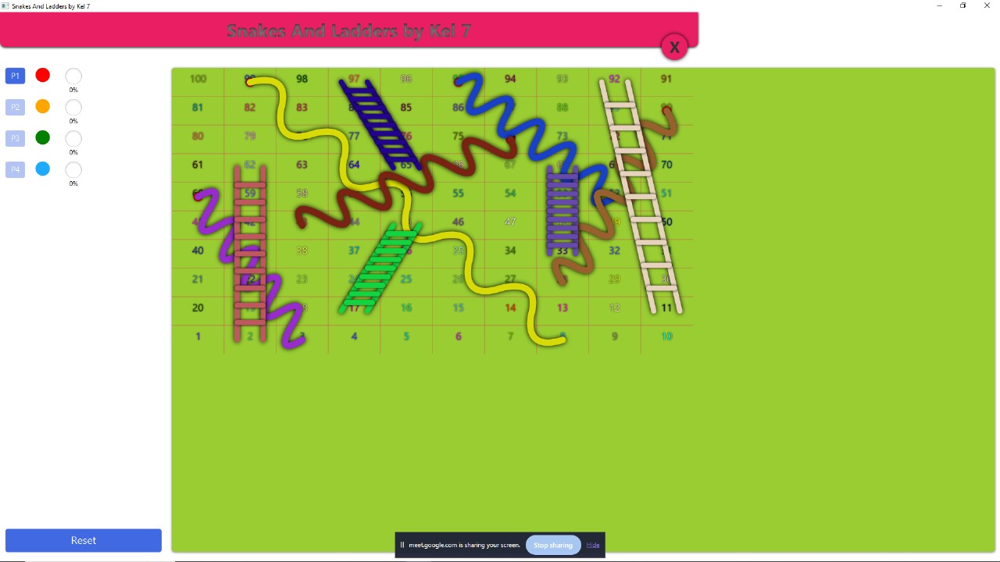

Sistem IoT Monitoring Suhu
Sistem IoT berbasis ESP32 dan DHT22 untuk memantau suhu dan kelembapan ruang penyimpanan obat, dilengkapi LED indikator, buzzer, dan notifikasi melalui Blynk.
Selengkapnya

Selengkapnya
Game Dengan JavaFX
Membuat game ular tangga berbasis desktop yang interaktif dengan menggunakan JavaFX. Game ini dirancang dengan interface yang menarik dan animasi untuk meningkatkan pengalaman pengguna.
Rangkaian Komunikasi Nirkabel
Komunikasi nirkabel adalah metode transfer data antara perangkat tanpa koneksi fisik. Data dikirim melalui udara menggunakan frekuensi tertentu.
SelengkapnyaSistem Manajemen Skripsi Online
Aplikasi berbasis web yang memudahkan mahasiswa dan dosen dalam mengelola proses bimbingan dan laporan skripsi secara digital.
Selengkapnya